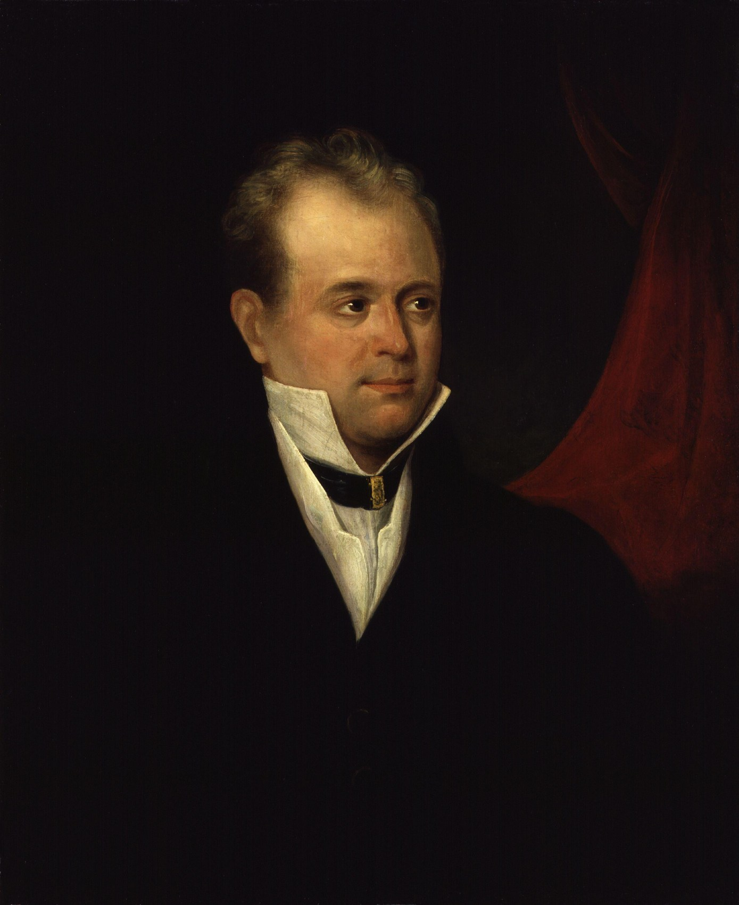

01Налоги на знание
Налоги на печать в Англии ввели в XVIII веке. Гербовый сбор на газеты появился в 1712 году, затем его увеличивали. К XIX веку сложилась система трёх платежей: гербовый сбор на каждый экземпляр газеты, налог на объявления и налог на бумагу. Современники называли это "налогами на знание" (taxes on knowledge).
Цена газеты составляла около семи пенсов, и она была недоступна рабочему. Читали газеты в трактирах и кофейнях, по складчине, из чужих рук. Политическое выступление одного читателя часто превращалось в публичное чтение для многих. Налоги выполняли не столько фискальную, сколько политическую функцию: они держали радикальную прессу вне досягаемости массы.
02Уильям Коббет и Political Register
Уильям Коббет, выходец из крестьянской семьи, начал издавать Political Register в 1802 году. Сначала он поддерживал тори, затем перешёл на сторону радикальной реформы: сокращение пенсий и синекур, уменьшение налогового бремени, расширение избирательного права. Стиль Коббета, прямой, разговорный, насыщенный аргументами и бытовыми образами, сделал его самым влиятельным публицистом эпохи.
В ноябре 1816 года Коббет выпустил дешёвое издание в виде памфлета по цене двух пенсов. Оно получило от противников название "Twopenny Trash". Памфлет избегал налога, так как не печатал новостей в обычном смысле, и расходился десятками тысяч экземпляров. После приостановки Habeas Corpus в 1817 году Коббет уехал в США, откуда продолжал присылать статьи. Позднее, в 1832 году, он был избран в парламент от Олдема, а Register выходил до его смерти в 1835 году.
03Братья Хант и The Examiner
The Examiner, еженедельник, основанный в 1808 году Джоном и Ли Хантами, отстаивал реформу парламента, свободу религии и вольную критику власти. В 1813 году братья были приговорены к двум годам тюрьмы за статью о принце-регенте, насмешливо описавшую его как человека, не заслуживающего восхваляющих эпитетов. Заключение превратило их в символ борьбы за свободу слова; Ли Хант принимал в тюрьме гостей из литературного мира, среди которых были Байрон и Лэм.
Газета отличалась литературным вкусом: Хант поддерживал молодых поэтов, среди них Шелли и Китса. Это показывает связь радикальной политики и романтической литературы в английской печати эпохи.
04Питерлоо и Шесть актов
Послевоенный экономический кризис и безработица вызвали рост протестов. 16 августа 1819 года армия и йомены разогнали собрание на поле Св. Петра в Манчестере, погибли, по разным оценкам, от одиннадцати до восемнадцати человек, ранены сотни. Событие назвали "Питерлоо" по аналогии с Ватерлоо. Правительство в декабре приняло "Шесть актов", в числе которых был закон, распространивший гербовый сбор на периодические издания с комментариями о новостях и повысивший наказания за "мятежную клевету".
Радикалы ответили открытым неповиновением. Эта борьба получила название "войны с нештемпелёванной прессой" (War of the Unstamped): тысячи продавцов и издателей получали штрафы и тюремные сроки, но продолжали торговать.
05Радикальные журналы: Black Dwarf, Republican, Poor Man's Guardian
Томас Вулер издавал Black Dwarf (1817 – 1824), Ричард Карлайл выпускал The Republican (с 1819 года), агитируя за республику, свободу религиозной критики и право печати без налогов. Карлайл провёл в тюрьме несколько лет, но газета продолжала выходить: когда его заключали под стражу, издание продолжали жена, сестра и добровольцы. Генри Хетерингтон выпускал Poor Man's Guardian (с 1831 года) с девизом о публикации вопреки закону.
Журнал "Республиканец" (The Republican) принадлежал радикальному издателю Ричарду Карлайлу (Richard Carlile), которого не следует путать с писателем Томасом Карлейлем. Издание начало выходить в 1819 году и стало главным органом республиканской и антиклерикальной агитации.

06Победа: отмена налогов
Реформа избирательной системы 1832 года расширила политические права среднего класса, а в 1836 году гербовый сбор снизили до одного пенни. Движение за полную отмену возглавила Ассоциация за отмену налогов на знание (1849), в которую входили Ричард Кобден, Томас Милнер Гибсон и организатор Коллет Добсон Коллет. Налог на объявления отменили в 1853 году, гербовый сбор в 1855-м, налог на бумагу в 1861-м, по инициативе Гладстона.
После этого вышла дешёвая ежедневная пресса, возникли Daily Telegraph (1855), вскоре снизившая цену до одного пенни и множество провинциальных ежедневных газет. Борьба за "пенсовую прессу" закончилась победой, но превратила издание в дорогое капиталовложение, где решающую роль играла реклама.
07Язык и тираж радикальной прессы
Радикальные издатели писали для читателя, который не имел образования. Они использовали простые предложения, бытовые примеры, прямое обращение к "рабочим людям". Коббет, говоря о налогах и пенсиях, переводил цифры бюджета на язык цены хлеба и пива. Дешёвые листки читали вслух в трактирах, и один экземпляр доходил до десятков слушателей. Поэтому распространение радикальной печати нельзя оценивать только по тиражу.
Тираж Twopenny Trash, по распространённым оценкам, достигал нескольких десятков тысяч экземпляров, что для начала XIX века было исключительным показателем. Власти воспринимали это как угрозу общественному порядку, и в 1817 году парламент принял законы о подавлении мятежных собраний и приостановил действие Habeas Corpus.
08Законодательные этапы
Борьба имела юридическую сторону. В 1819 году Шесть актов распространили гербовый сбор на дешёвые периодические издания, ужесточили наказания за мятежную клевету и ограничили публичные собрания. Радикалы отвечали открытым нарушением закона: издавали газеты без штемпеля и принимали аресты. Судебные процессы становились публичной агитацией, поскольку подсудимые произносили речи в суде и публиковали их.
В 1830-х годах нештемпелёванная пресса достигла массового размаха, а в 1836 году правительство снизило сбор с четырёх пенсов до одного и усилило контроль за исполнением. Радикальные газеты потеряли привлекательность нелегальности, но получили доступ к легальному рынку. Полная отмена налога в 1855 году завершила процесс.
Парламентская реформа 1832 года ликвидировала часть избирательных диспропорций и расширила представительство, но не установила всеобщего голосования. Поэтому борьба радикальной прессы не завершилась принятием одного закона. В дальнейшем требования более широких политических прав продолжились в чартистской журналистике.
Даты и события
- 1712Гербовый сбор на газеты
- 1802Political Register Коббета
- 1808The Examiner братьев Хант
- 1816Twopenny Trash
- 1819Питерлоо, Шесть актов, The Republican
- 1831Poor Man's Guardian
- 1836Снижение гербового сбора до 1 пенни
- 1853 – 1861Отмена налогов на объявления, на газеты, на бумагу
Отмена налогов снизила порог входа в газетное дело. Однако дешёвая газета всё сильнее зависела от рекламы и большого тиража. Победа над фискальным барьером создала новые возможности и новые экономические ограничения для редакции.
Источники и материалы для чтения
- UK Parliament. Уильям Коббет и парламентская реформа ↗
- Hansard. Дебаты Taxes on Knowledge, 14 апреля 1853 года ↗
- Архив Ричарда Карлайла. Описание коллекции ↗
- The Republican. Цифровое издание в Princeton Theological Seminary ↗
Книги и научная литература
- Aspinall A. Politics and the Press, c. 1780 – 1850. London: Home & Van Thal, 1949.
- Wickwar W. H. The Struggle for the Freedom of the Press, 1819 – 1832. London: Allen & Unwin, 1928.
- Wiener J. H. The War of the Unstamped. Ithaca: Cornell University Press, 1969.
- Hollis P. The Pauper Press. Oxford: Oxford University Press, 1970.
- Collet C. D. History of the Taxes on Knowledge: Their Origin and Repeal. London: Unwin, 1899.
- Thompson E. P. The Making of the English Working Class. London: Gollancz, 1963.